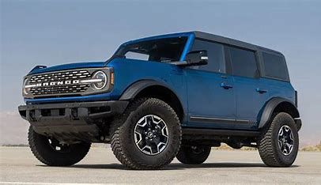
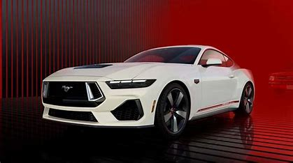

History
The Ford Motor Company was founded by Henry Ford on June 16, 1903, in Dearborn, Michigan. It is one of the largest automakers in the world, known for revolutionizing the automotive industry with the introduction of assembly line production techniques, particularly with the Model T in 1908. Over the years, Ford has expanded its operations globally and introduced various innovations in automotive technology. The company has a rich history that includes significant milestones such as the establishment of the Lincoln Motor Company in 1919 and the introduction of the 40-hour workweek in 1914, which set a precedent for labor practices in the industry
Products
| Bronco | Mustang | Expedition | F-250 Truck |
|---|---|---|---|
|  |  |  |
 |
| $37,000 | $35,000 | $60,000 | $65,000 |
| The Ford Bronco is an off-road vehicle built for severe off-roading. It is a model line of sport utility vehicles manufactured and marketed by Ford. The Bronco is a truck-based SUV that's designed for off-roading, with four-wheel drive, plenty of ground clearance, and many available hardware add-ons to keep you moving over rough terrain. Unlike its smaller brother Bronco Sport, Ford offered the Bronco with a choice of two or four doors. Ford describes the Bronco as a vehicle with the “toughness of an F-Series and the spirit of a Mustang”. | The Ford Mustang lineup features 9 trims, including the new Dark Horse™ and Dark Horse™ Premium. You can choose from various engine options, such as the 2.3L EcoBoost® and 5.0L Ti-VCT V8 engines, paired with either a TREMEC® 6-Speed Manual or a 10-speed automatic transmission. The Mustang is known for its V8 power, grippy handling, and modern technology features, making it a strong contender in the performance coupe market. For detailed specifications, including dimensions and cargo space, you can refer to sources like MotorTrend. | The Ford Expedition is a spacious SUV designed for families, offering seating for up to eight passengers and a large cargo area. It is available in several trims, including Active, Platinum, Tremor, and King Ranch. This model features a powerful engine, high towing capacity, and various modern amenities, making it a great choice for those needing versatility and comfort. | The Ford F-250 Super Duty is a heavy-duty truck known for its impressive towing and payload capabilities, making it a top contender in the pickup market. It features a rugged design, advanced technology, and a comfortable interior, with options for various engine specifications to suit different needs. Overall, it combines strength, reliability, and modern technology, making it a strong choice for those in need of a powerful truck. |